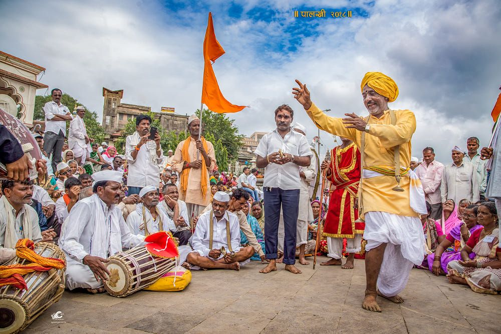
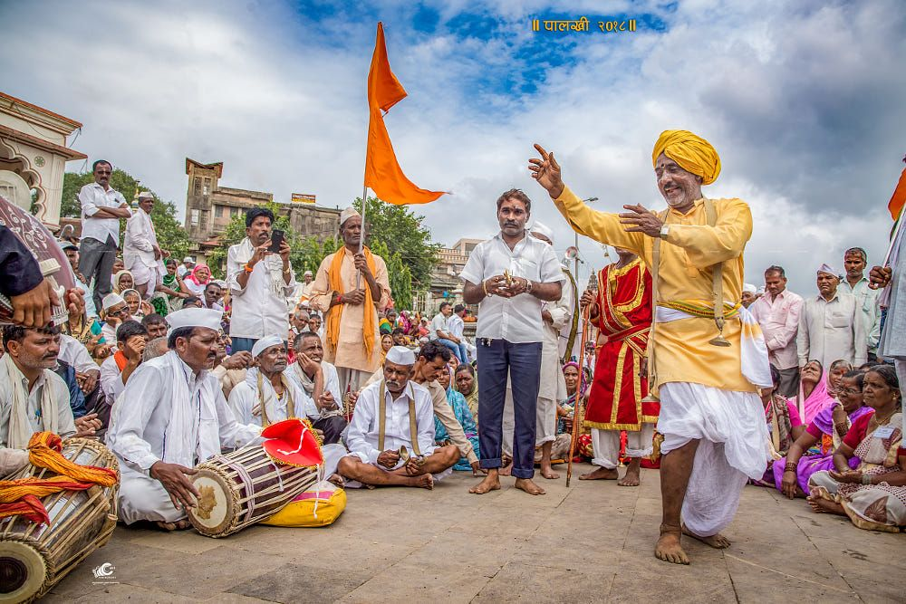

Pandharpur Wari
This is the procession that starts from Pune and culmainates at the Vithoba temple in Pandharpur. People of the warkari sect undertake This almost 200 kim pilgrimage every year. The date is not fixed as it dependeds on the lunar calendar; the warkari reach the temple at Pandharpur on teh occasion of Ashadhi Ekadhashi. Two main waris (religious processions), belonging to the great saints Dnyaneshwar and Tukaram leave form Pune district. Decottes carry a palkhi (palanquin) with the saints'paduks (footprints). They leave from Alandi and Dehu respectively. The city of Pune is thir first night halt. Over the next 18 days, the warkaris carry this palkhl all the wasy to Pandharpur, singing and dancing to the devotional songs and chants.
 

GANESH CHATURTHI
Ganesh Chathurti was firstly made in Mumbai ,Maharashtra .This festival is celebrated celebrated on 1893 and the idea of celebrating this festival was made by SHRI LOKMANYA TILAK and the idea behind this festival was to unit the people of India to get together and fight with the britisher and make them run from India. Ganesh Chaturthi is celebrated every year not only in Maharashtra but this festival gets celebrated in all over the world and everyone eagerly wait for this festival whole year and they celebrate with very joy and happiness . This festival is very much famous in Maharashtra and in Maharashtra everyone celebrated this festival and this festival get celebrated for 10 days with full excitement, joy and happiness.

Till when ganesh Visarjan does not happen till then everyday in morning pooja happen and in the night before meal and people do lot of programs by remembering the god Ganesh and how he killed evil and how disciplined was he. At the time of visarjan everyone does visarjan of Lord Ganesh and just prays to him that he’ll be taking care of everyone and keeping them safe . when they do visarjan of Lord ganesh they say “GANPATI BAPPA MORYA UDCHA WARSE LOCKAR YAHA” With this they do visarjan of Bappa and say bye to Lord Ganesh.